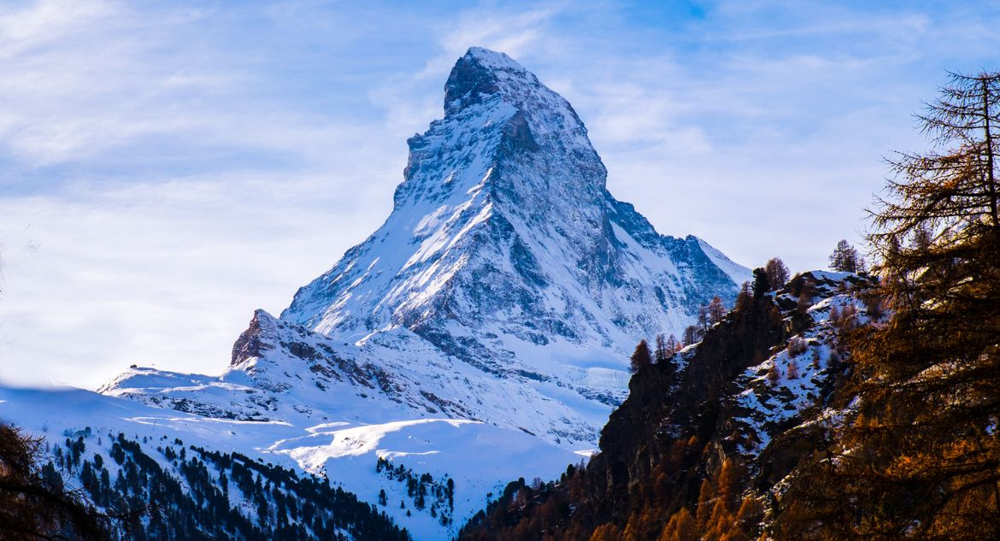

Esse famoso monte nevado alpino atravessa a fronteira entre a Suíça e a Itália. Com 4.478 m, é menor que o icônico Mont Blanc (4.810 m), mas sua impressionante forma piramidal – para não mencionar seu ponto com vista para a acolhedora cidade suíça de Zermatt – o torna o garoto-propaganda dos Alpes.